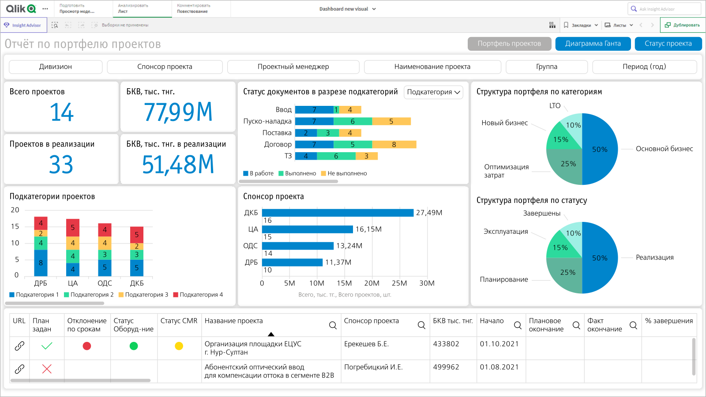
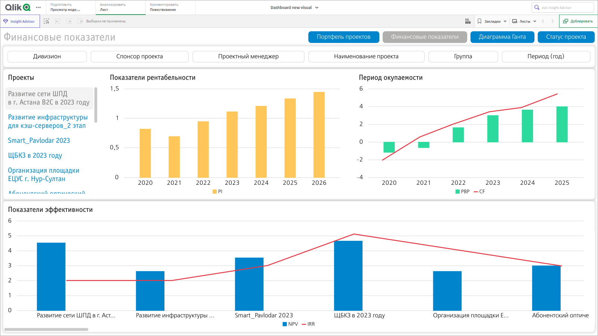
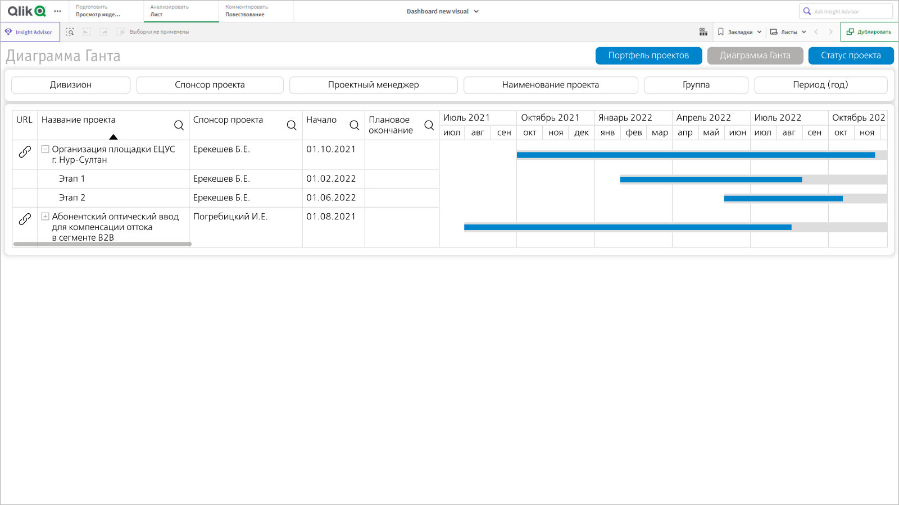
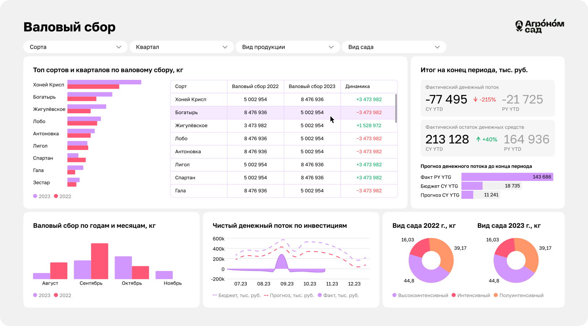

Казахтелеком
Отчётность по портфелю проектов: сводный дашборд, финансовые показатели и диаграмма Ганта по срокам



Отчётность по портфелю проектов: сводный дашборд, финансовые показатели и диаграмма Ганта по срокам
BI-дашборд валового сбора: урожай по сортам и кварталам, денежный поток и прогноз до конца периода

В Ланит-Терком спроектировала интерфейсы внутренней HR-системы. Сотрудники фиксировали рабочие часы по проектам, руководители могли видеть распределение загрузки. Связала данные о сотрудниках, командах и проектах через общие паттерны форм, карточек и таблиц.
Прорабатывала списки документов и задач, массовые действия, фильтрацию и поиск по метаданным. Учитывала, как действия зависят от состояния объекта и роли пользователя.